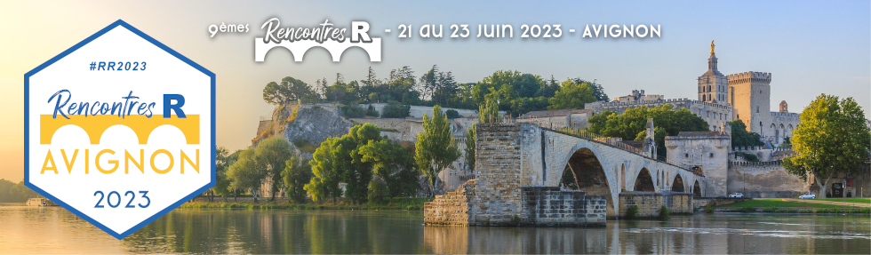

| auteurrices | titre | mots_cles |
|---|---|---|
| Christophe Dervieux | De R Markdown à Quarto sans effort pour aller plus loin avec ses publications. | quarto, rmarkdown, publication, reproductibilité |
| Antoine Bichat, Julie Aubert | Créer un pipeline de machine learning complet avec {tidymodels} | machine learning, statistiques, tidymodels |
| Kim Antunez, Etienne Côme | Statspatial : Analyse spatiale et cartographie avec R | Statistique spatiale, Cartographie |
| Aurélie Vache | Tips pour combattre le syndrome de l'imposteur | developpement personnel |
| Bastien Chassagnol, Etienne Becht, Gregory Nuel, Yufei Luo | DeCovarT, a R package for a robust deconvolution of cell mixture in transcriptomic samples using a multivariate Gaussian generative framework | cellular deconvolution, gLasso, generative model, bulk RNA Sequencing, Levenberg, Marquard, constrained optimisation |
| Jean Dupin | CGI – Permettre à de nouveaux utilisateurs de R de créer des graphiques respectant les contraintes de son institut | Package, Design, Visualisation |
| Thierry Faure, Loris Croce, Gil De Sousa | Applications Shiny pour le suivi de systèmes agricoles et environementaux. | application Shiny, IoT, traitement, visualisation et analyse de données |
| Lisa Nicvert, Hervé Fritz, Stéphane Dray | Camtrapviz, une interface Shiny pour visualiser les données de pièges photographiques | visualisation de données, Shiny, package R, écologie, pièges photographiques |
| Dan Chaltiel | {crosstable} : décrivez vos datasets en quelques lignes | Package – Statistique – épidémiologie – Biostatistique – Description – Data – Dataset |
| Vincent Guyader | Comment bien rater votre forge logicielle R ? | Infrastructure, Workbench |
| Amélie Vernay, Benjamin Charlier, Ghislain Durif, Chloé Serre-Combe | RKeOps v2: Kernel operations with Symbolic Tensors on the GPU in R | Kernel operations, Matrix reduction, GPU, Symbolic matrix operations, Computational statistics |
| Colin Fay | MongoDB - J'suis pas venu ici pour souffrir, ok ? | Package, Base de données, production, krav maga |
| Gabrielle Devaux | Comment Shiny aide Enedis à contribuer à la transition énergétique pour les collectivités territoriales | Statistique spatiale, Visualisation, Cartographie |
| Lise Vaudor, Maëlle Salmon | glitter makes SPARQL: glitter, un package R pour explorer et collecter des données du web sémantique | Web sémantique, Linked Open Data, RDF, SPARQL, Wikidata, tidyverse, Package |
| Simon Benateau | Vigie-Analyse, des applications shiny pour les scol'R | Statistique, Ecologie, Application shiny, data, Enseignement |
| Jean-François Rey | {VMR} to manage Virtual Machines for/with R | vagrant, virtual machines, gitlab |
| Pierre Santagostini, Nizar Bouhlel | Packages mggd et mcauchyd – Distribution gaussienne généralisée multivariée, distribution de Cauchy multivariée | Package, Loi gaussienne généralisée multivariée, Loi de Cauchy multivariée, Divergence de Kullback, Leibler |
| Loup Rimbaud, Julien Papaïx, Jean-François Rey, Marta Zafarroni, Marta Zafarroni | Modelling plant resistance deployment: the R package {landsepi} | Modélisation – Pathologie Végétale– Package |
| Colin Fay | Welcome to the golemverse | Package, shiny, production, golem |
| Xavier Delpuech | Une application R Shiny pour la simulation du bilan hydrique des sols viticoles (modèle WaLIS) | vigne, modélisation, contrainte hydrique, R, shiny |
| Nancy Rebout | Enseigner les statistiques avec YouTube et la pop culture | Programmation – statistiques – pédagogie – ludique |
| Luis Garcez | R package for analyzing adverse drug reactions in FDA database: Evaluation of ALS patients adverse drug reactions | Statistics, Pharmacology, Adverse Drug Reactions, Package, ALS |
| Marine Marjou, Marie Grosdidier, Charlotte Rüger, Pauline Bres | {qdd} : un package R de nettoyage et de qualité des données pour les Plateformes d'Epidémiosurveillances | data, package, qualité des données, nettoyage, épidémiologie, épidémiosurveillance |
| Olivier Delaigue, Guillaume Thirel, David Dorchies, Pierre Brigode | airGRgalaxy : des outils hydrologiques autour des modèles GR | Package, Hydrologie, Modélisation, Assimilation de données, Influences anthropiques, Enseignement |
| Elise Maigné, Isabelle Sanchez, David Carayon, Joseph Tran, Jean-François Rey | SK8 : Un service institutionnel de gestion et d'hébergement d'applications Shiny | R, Shiny, Web, Application, Devops, INRAE, Kubernetes, Docker, renv, CI/CD, Gitlab, service |
| Guilherme Mendoza Guimarães, Olivier Delaigue | Développement d'une base de données hydro-climatiques nationale à l'aide de R | Bassin versant, Hydrologie, Climatologie, Physiographie, Base de données |
| David Carayon, Sydney Girard, Frédéric Zahm | IDEATools : Un package R pour évaluer la durabilité des exploitations agricoles avec la méthode IDEA4 | R, Package, Dataviz, Reporting, INRAE, IDEA4, Agriculture, Durabilité |
| Nadia Bessoltane, Audrey Hulot, Gwendal Cueff, Christine Paysant - Le Roux, Delphine Charif | RFLOMICS: Interactive web application for multi-omics data analysis | Biostatistiques, omiques, Rshiny, Reproductibilité, package |
| Pascal Cristofoli, Bénédicte Garnier, Timothée Giraud, Elisabeth Morand | Russ a 10 ans ... | Sciences sociales, Ingenieure, Résilient, Histoire |
| Théo Grente, Valérie Girardin, Phillipe Regnault, Matthieu Dien | Analyse de réseaux trophiques : comparaison d'algorithmes pour l'échantillonage uniforme de polytope | Package, Biologie, Réseaux trophiques, Échantillonage uniforme, Méthodes MCMC, Modélisation Linéaire Inverse |
| Inchboard Lauren | L'analyse de survie, une « nouvelle » méthode pour modéliser les dynamiques temporelles du dépérissement de la vigne | épidémiologie, statistique, viticulture, maladies du bois, esca, survie |
| Arthur Bréant | Le futur c'est SAS ! Euh. . . non, Sass ! | Sass, Shiny, Stylisation, Productivité |
| Mohamed El Fodil Ihaddaden | Ultra R : Comment écrire du code Ultra Efficient ? | programmation, data, Package |
| Murielle Delmotte | Initier 2400 personnes à R par enchantement : une histoire de licornes, potion et génie...logiciel | Teamworks, Génie logiciel, devops, formation |
| Lino Galiana, Romain Avouac | Diffuser la culture de la reproductibilité par une formation aux bonnes pratiques: de la qualité d'un projet aux pipelines de données | Bonnes pratiques, Qualité, Packages, renv, Environnements virtuels, Pipelines, targets |
| Marie Vaugoyeau | Où trouver de l'aide quand on apprend R ? | apprentissage, reprex, rnewbies, débutant |
| Christophe Dervieux | Se démarquer avec les thèmes HTML Quarto. | quarto – rmarkdown – html – css – styles – publication – reproductibilité |
| Julien Chiquet, Chloé-Agathe Azencott, François David Collin, Ghislain Durif, Mathurin Massias, Pierre Neuvial, Nelle Varoquaux | Computo: An academic journal promoting reproductibility via Quarto and Continuous Integration | Reproducible research, Quarto, R, Python, Julia, Machine, Learning, Statistics |
| Valentin Cadoret, Victor Perrier | Synthèse hebdomadaire de la consommation d'électricité française | Consommation, Electricité, Visualisation, Rmarkdown, pandoc, bslib, blastula, httr2, plotly |
| Rhian Davies | Data science without the data | data science, data pipeline, development |
| Théodore Vanrenterghem | ShinySbm : une application Shiny pour analyser des réseaux à l'aide de modèles à blocs stochastiques | sbm – Shiny – Package – Données de Réseaux – Statistiques appliquées – Graphes – Écologie – Sociologie |
| Antoine Languillaume | "AHHH #$@% ça marche pas !" : Aidez votre père dans sa lutte avec l'informatique et devenez un.e meilleur.e développeur.se | Reproductibilité, Apprentissage, Interopérabilité R et Python, Conteneurisation, Chanson Française. |
| François-David Collin | Pybind11/reticulate comme alternative à Rcpp | Python, R, modern C++, Packages, Rcp |
| Antony Pudlicki, Olivier Bernard, Valéry Bourny, Geoffroy Berard, Olivier Durand-Drouhin | SABRE (industrial project) | R en contexte industriel |
| Youenn Drouet | MyFamilyRisk: une application R/Shiny pour saisir facilement son histoire familiale de cancer. | Oncogénétique, Application Shiny, Histoire familiale de cancer |
| Sébastien Rochette | {golem} et {fusen}, le combo gagnant pour construire des applications Shiny robustes et faciles à maintenir | Shiny, golem, fusen, package, workflow |
| Maxime Jaunatre, Georges Kunstler | {matreex} : Simuler les dynamiques forestières européeennes | Integral projection model, dynamique des populations, Biologie, ingénieur, Package |
| Mouna Belaid | R-Ladies Paris, une communauté engagée garantissant la diversité et l'inclusivité | RLadies, communauté, inclusivité, diversité, égalité |
| Régis Leroy | 7 Méthodes secrètes des informaticiens pour mieux programmer | Développement, Ingénierie, Bonnes pratiques |
| Andre Buskvekster | R sur OpenBSD | pare, feu, installation, configuration, sécurité, communauté, OpenBSD, pf, vmm, Docker, Rserve, tidyverse, RStudio, Posit, PostGIS |
| Frédéric Blanchard, Guillaume Dollé, Philippe Regnault | meRoo : Un écosystème logiciel pour l'apprentissage des sciences des données installé sur un cluster de Raspberry Pi | Enseignement, data science, workflow, cluster, Raspberry Pi. |
| Laurent Spanu, Fabian Lenartz | Qualité de l'air ambiant en Wallonie (Belgique) - Visualisation des mesures de la pollution via une app' R-Shiny {golem} dans un environnement ShinyProxy | sciences, qualité de l'air, data, visualisation, shiny, GitLab |
| Alexis Fribault | Suivi de la réponse des agroécosystèmes au changement climatique. Visualisation sur une application R-Shiny | Changement climatique, Shiny, biodiversité, agroécosystèmes |
| Joël Girès, Hugo Périlleux | phacochr: un géocodeur pour les géocoder tous - Package R pour réaliser le géocodage d'adresses en Belgique | Package, Géocodage, SIG, fuzzyjoin |
| Yan Holtz | R dans l'univers de la Dataviz | R, dataviz, d3.js, shiny, ggplot2 |
| Dan Chaltiel | {autoimport} : gérer l'enfer des imports | Package, Statistiques, Documentation, roxygen2 |
| David Gohel | Réaliser ses tableaux avec flextable | tableaux, reporting clinique, agrégations |
| Sarah Bauduin, Eliot Mcintire, Alex Chubaty | La modélisation individu-centrée sur R avec le package NetLogoR | Modélisation individu, centrée, Modélisation agent, centrée, NetLogoR, NetLogo, Package R |
| Terence Dechaux | Combien d'animaux dans mon essai ? | Statistique – Expérimentation – Echantillon – Tests statistiques – R – Shiny |
| Paul Carteron | {happign} : une porte ouverte sur les données IGN | Package, Data, Géospatiale |
| Alexis Van Straaten, Jean Feydy, Anne-Sophie Jannot | survivalGPU : Analyses de survie sur cartes graphiques | Package, analyses de survie, épidémiologie, biostatistique |
| David Gohel | ggiraph et shiny | ggplot2, reactive, interactive |
| Charlotte Cheinin | Visualisations interactives de données au service de la prise de décision sur les études cliniques de phase précoce en oncologie | RShiny – visualisation de données – statistique – étude clinique – multi cohortes – oncologie – prise de décision – GxP |
| Mickaël Carlos | Utiliser R et Python pour le traitement de données : exploration des avantages de Python en matière de visualisation | Data science – Python – R – Data Science – Dataviz – Interactivité |
| Hugues Pecout | Rzine : pour la diffusion et le partage de ressources sur la pratique de R en SHS | ressources, collection, notebook, Git, SHS |
| Guyliann Engels, Philippe Grosjean | Application {shiny} de correction de projets individuels utilisant R, RStudio, GitHub | Science des données biologiques, Application shiny, Pédagogie, Correction, Projet RStudio, GitHub, R Markdown |
| Philippe Grosjean | fRench : R en français | R, Traduction, Français, Public francophone, RStudio, data.io, chart |
| Cervan Girard | Et si {shiny} n'existait pas. . . ? | ingénierie, shiny, application web, back to the future |
| Arthur Bréant | Construiriez-vous votre cuisine sans en avoir fait des plans ? | Shiny, Méthode d'optimisation, Maquette, Figma |
| Antoine Languillaume | {mariobox}: des APIs {plumber} à toute épreuve | Ingénérie logicielle, API REST, framework, {plumber} |
| Christophe Regouby | {tabnet} : Un package de deep-learning pour données tabulaires entièrement intégré à tidymodels | Deep, learning, Données tabulaires, torch, IA, Package |
| Aymeric Stamm, Lise Bellanger, Laura Maria Sangalli, Piercesare Secchi, Simone Vantini | fdacluster: Clustering for Functional Data | functional data, amplitude & phase variability, hierarchical clustering, R package. |
| Alain Quartier-La-Tente | Manipuler les moyennes mobiles avec R et JDemetra+ | Statistique, séries temporelles, moyennes mobiles, package |
| Timothée Giraud | L'écosystème spatial de R | cartographie, analyse spatiale, SIG |
| Lise Vaudor | Pastels, paillettes et packages pour accompagner la recherche avec R | recherche, pédagogie, illustrations, shiny, package |
| Kim Antunez, Julien Pramil | Lissage spatial avec le package btb | Statistique spatiale, Carroyage, Lissage spatial, Statistiques urbaines, Datavisualisation |
| Marc Grossouvre, Didier Rullière, Jonathan Villot | Quelle géostatistique pour des DPE à la localisation incertaine ? | Géostatistique, climat, rénovation, multi, échelle, MAUP |
| Sébastien Coube | Modèle hiérarchique de processus gaussien des plus proches voisins non stationnaire, multivarié, et non séparable, pour la modélisation des polluants atmosphériques | Statistique bayésienne, Statistique spatiale : Markov chain Monte, Carlo, Pollution, Processus gaussien des plus proches voisins, Approximation de Vecchia, Nonstationarité, Nonséparabilité, Multivariabilité |
| Bruno André Rodrigues Coelho | La reproductibilité avec R, ou pourquoi celle-ci est située sur un continuum | reproductibilité, gestion des risques |
| Florence Mounier | Faire un package R documenté, testé, versionné et intégré en quelques minutes ? Challenge accepted ! | Package, workflow, {fusen}, RStudio, GitHub |
| Yohann Mansiaux | {lozen}, le thermomix de vos projets de développement R | Package, Gestion de projet, Github, Gitlab |


Les 9e Rencontres R ont eu lieu à Avignon, du 21 au 23 juin 2023 (site web).
Conférenciers invités
Rhian Davies, : Data science without the data (résumé)
Timothée Giraud : L’écosystème spatial de R (résumé)
Yan Holtz : R dans l’univers de la Dataviz (résumé)
Lise Vaudor : Pastels, paillettes et packages pour accompagner la recherche avec R (résumé)
Aurélie Vache : Tips pour combattre le syndrome de l’imposteur (résumé)